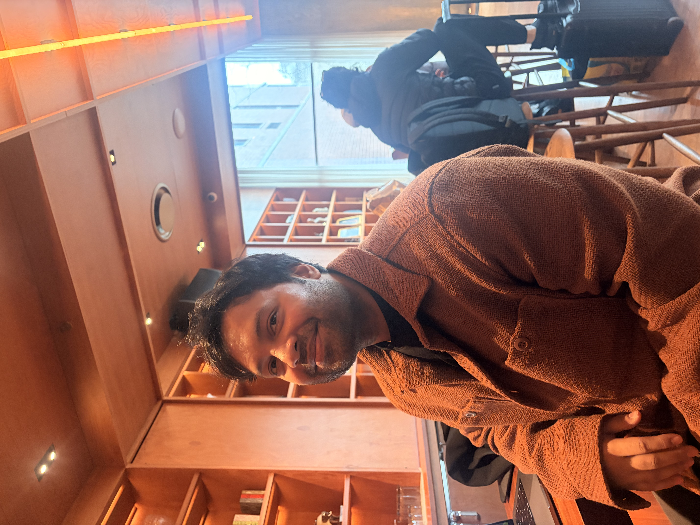

Paper Record Tracking Project
DHA has more than 8M paper records requiring tracked chain of custody. We consolidated data from disparate legacy systems, applied new governance standards, and built expanded workflows now serving 10k+ users globally.

born, raised, & based in Queens NY
I'm a manager of products, programs, and projects in the tech space with a predilection for solving hard problems and building complex things; I love it the most when these two processes are intertwined.
There is art in balancing the simple with the complex, the minimal with the maximal, the rough with the refined.
I feel most beautiful when I have big ideas and I take a step down the long runway, and I feel most grateful when I have the opportunity to share the ideas and the journey to their fruition.
a technology company, leading software development teams that build healthcare and benefits applications for the United States Federal Government — serving over 10,000 users worldwide.
DHA has more than 8M paper records requiring tracked chain of custody. We consolidated data from disparate legacy systems, applied new governance standards, and built expanded workflows now serving 10k+ users globally.
Unified a fragmented DoD special needs care management system across all military branches — standardizing intake-to-discharge workflows, migrating and cleaning data, and meeting congressional reporting requirements.
My personal recording studio helping novice and amateur musicians make their first records — from composition and arrangement to mixing, mastering, and promotion.